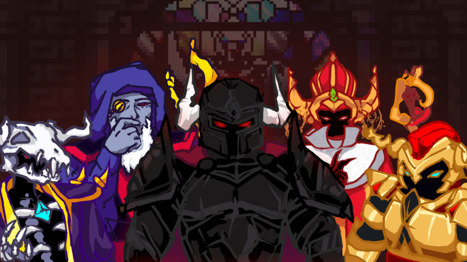

oryx's sanctuary
I created this banner for a contest hosted by the Realm of the Mad God Discord. The goal of the assignment was to make a server banner for the server. I chose to depict Oryx the Mad God 3 + the 4 minibosses of Oryx's Sanctuary. Since this dungeon is the ultimate engame of Realm of the Mad God, I thought it would be a fittingly dramatic and encompassing topic.
This project was a somewhat small one, but still a nice challenge. RotMG has been my main intro to drawing topics like armor and fantasy themes, so at this point I was still not as familiar with this. Considering that this piece would have 5 figures, I went for a simpler style. This piece did end up winning 1st out of 10, and thus was the server banner for a time. Overall, I think that though this piece was relatively "simple," I still think it helped me with determining style and interpreting sprites in my own way.
Adobe Photoshop; November 2020